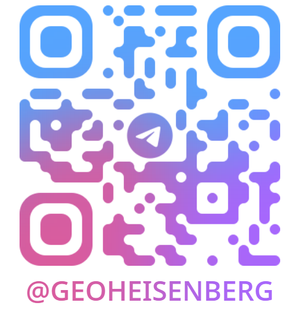

Умное автопереключение клавиатуры на лету, мгновенная замена слова по нажатию CapsLock без залипания и сверхбыстрый голосовой ввод через Groq Whisper AI с задержкой всего 0.2 секунды.
Интерактивный симулятор работы двух главных возможностей RusEn: автопереключения текста на лету и ультрабыстрой диктовки Whisper AI.
Когда вы начинаете печатать слово не на том языке (например, забыли переключиться с английского), RusEn при нажатии пробела или CapsLock моментально конвертирует слово и переключает язык Windows.
Просто зажмите левый Shift в любом месте Windows, надиктуйте мысль и отпустите. Текст сразу же впечатается с идеальной расстановкой знаков препинания.
В реальной программе аудио передается напрямую в Groq API за 240 мс без сохранения звука на диске.
Все ключевые функции объединены в одном легковесном приложении без перегруженного интерфейса.
Одиночное касание CapsLock переключает язык и исправляет последнее набранное слово. При этом заглавные буквы сохраняются при удержании или двойном тапе.
RusEn анализирует n-граммы и частотность символов. Как только вы завершаете ошибочное слово пробелом или Enter, программа на лету меняет раскладку и заменяет текст без мерцания.
Интеграция с Whisper Large v3 через сверхбыстрые тензорные процессоры Groq LPU. Распознавание русской и английской речи занимает рекордные 200–300 мс с безупречной пунктуацией.
Добавьте несколько бесплатных ключей Groq API. RusEn автоматически распределяет запросы по кругу. При исчерпании лимита (ошибка 429) запрос бесшовно переходит на следующий ключ.
Полная независимость от интернета! Загружайте в 1 клик нейросети GigaAM-v2 (Сбер) или Faster-Whisper Turbo прямо из настроек RusEn. Приложение автоматически определит оборудование и оптимизирует запуск под CUDA или CPU.
Никакого кейлоггинга и сторонних серверов. RusEn работает локально на вашем ПК, не собирает персональные данные и передает звук только по защищенному SSL-соединению в Groq.
Почему тысячи пользователей переходят с Punto Switcher и Caramba Switcher на RusEn: стабильность в Windows 11, ноль рекламы и современный ИИ-голосовой ввод.
| Критерий / Функция |
RusEn
Выбор 2026
|
Punto Switcher | Caramba Switcher | Win+H (Голос) |
|---|---|---|---|---|
| Совместимость с Windows 11 | ✓ 100% стабильно (Win32 API) | ⚠ Заброшен, сбои в окнах | ✓ Работает частично | ✓ Системная |
| Голосовой ввод нейросетью | ✓ Whisper L3 + Сбер GigaAM | ✗ Отсутствует | ✗ Отсутствует | ⚠ Базовый облачный |
| Офлайн-режим без интернета | ✓ Да (CUDA & CPU модели) | ✓ Только раскладка | ✓ Только раскладка | ✗ Только онлайн |
| Умный CapsLock (замена слова) | ✓ Без залипания и задержек | ✗ Только Break / F12 | ✗ Нет | ✗ Нет |
| Скорость отклика транскрибации | ⚡ 0.24 сек (Groq LPU) | — | — | 🐢 1.5–3.5 сек задержки |
| Реклама и сбор данных | ✓ Ноль рекламы, без слежки | ✗ Реклама, трекеры Яндекс | ⚠ Сбор телеметрии | ⚠ Телеметрия Windows |
| Стоимость лицензии | 100% Бесплатно навсегда | Бесплатно (с рекламой) | Платная подписка Pro | Встроено в ОС |
Groq предоставляет щедрый бесплатный лимит на модель Whisper Large v3 (тысячи минут распознавания в месяц). Получение занимает ровно 1 минуту.
Откройте официальную консоль разработчиков Groq. Авторизуйтесь в 1 клик через аккаунт Google или GitHub.
console.groq.com/keys
Нажмите кнопку «Create API Key», укажите любое имя (например, RusEn) и скопируйте полученную строку, начинающуюся с gsk_...
В меню трея выберите «Настройки» → вкладка «Модель и Голос», вставьте ключ и нажмите кнопку «Проверить ключ». Программа подтвердит доступ зеленым значком!
Всё, что вам нужно знать об установке, настройке автопереключения и голосовом вводе RusEn.
ghbdtn) и вставляет его в правильной раскладке (привет), одновременно переключая системный язык. А чтобы включить классический режим ЗАГЛАВНЫХ БУКВ, достаточно просто зажать CapsLock на полсекунды. Это полностью решает проблему случайных нажатий.
update.bat либо выбрать архив в меню настроек программы («Установить из файла»).
RusEn создается для людей. Вы можете напрямую связаться с автором в Telegram для предложений или отблагодарить за разработку донатом.
Нашли ошибку, есть идея или хотите задать вопрос по работе программы? Напишите напрямую:

RusEn абсолютно бесплатен. Если утилита экономит ваше время каждый день — поддержите развитие проекта:
Удобный установщик включает все необходимые компоненты для работы автопереключения и голосового ввода на Windows 10 и 11 (64-bit).
Зеркала для загрузки (Google Диск):
update.bat (он сам закроет старую версию, обновит файлы и перезапустит RusEn), либо выберите скачанный .zip прямо в программе: Настройки → Обновления → «Установить из файла».